关于这个功能，你能在 视频教程中找到。
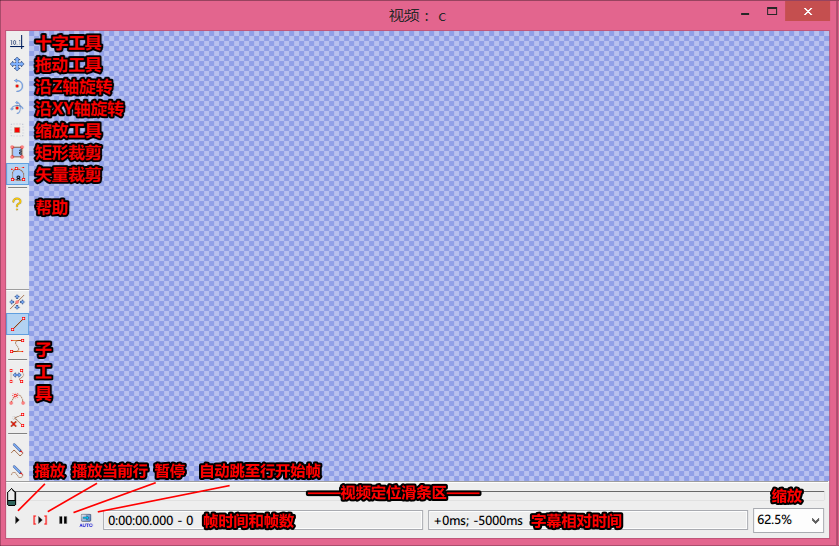
播放视频, 从当前帧开始。查看 使用视频 来获取Aegisub中有关的信息。
从当前活动行的开始帧播放视频，到该行结束帧停止。
当选择新一行时，视频自动定位到该行的开始帧。
显示当前帧数和当前帧对应的开始时间。如果当前播放的帧是关键帧，这个框区的背景色就是绿色的。
注意，有些情况下使用 "将当前视频帧设为所选字幕的开始时间" (Ctrl-3) 和 "将当前视频帧设为所选字幕的结束时间" (Ctrl-4) 得到的结果会与预期显示的不同，这是因为一些近似取整的错误导致的。（译者注：主要发生在预览视频为60FPS或15FPS时，所谓的逐帧对不准现象，可以手动调节时间解决）
显示当前视频帧相对于当前活动行开始时间的时间（偏移量），或相对于活动行结束时间。 当你使用含有相对时间参数的特效标签时，这两个时间十分有价值，如 \t 和 \fad。
缩放当前视频的显示大小。
用来定位视频位置。按住Shift的同时拖动滑块会自动吸附关键帧。默认情况下←→键可以逐帧定位视频; Alt-left/right可以一次性调整10帧;Shift-left/right可以跳到前后的关键帧。激活视频滑块可以用右键单击它或者按Ctrl-Space。如果视频滑块已经被激活，按Ctrl-Space可以回到之间的活动部分。
你可以右键单击视频部分打开一个背景菜单，它有以下选项:
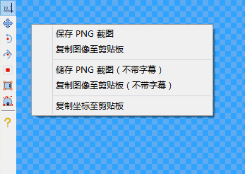
目前有七种不同的可视化排版工具可供使用: 十字工具（标准模式定位工具）, 拖放字幕, 绕z轴旋转字幕,绕xy轴旋转字幕,缩放工具（沿X轴或Y轴的缩放工具）,矩形裁剪工具和矢量裁剪工具。
这是标准模式，点击工具后在视频区域移动光标，光标会变为十字，十字附近会显示出光标所在点相对视频的坐标。默认情况下这个坐标是相对于左上角，按下Shift后这个坐标是相对于右下角计算。双击点会把该点的坐标以 \pos 标签 的形式写入到当前行中。如果按下Alt同时双击，当前所有选择的行都会和被移动的行移动相同的距离(包括当前帧不可见的行)。(译者注:用于批量调整已有pos行的重定位，不会造成相对移动)
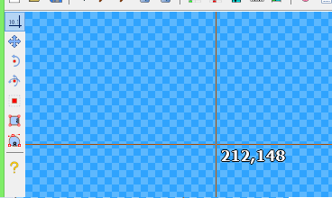
拖动工具有两种模式。你可以使用辅助工具条在两种模式之间切换。
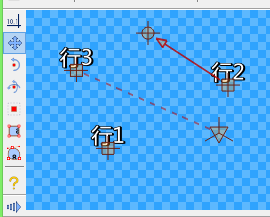
在定位模式下，你可以简单地在视频表面点击-拖动字幕（通过“锚”，即那个方块）。你松开按键时的 \pos 参数会被写入到行中。
在移动模式下，会有另一个圆形的“锚”，它用来定位移动终点的坐标。设置好移动的起点终点后，会有一条箭头线从起点指向终点。为了更好地控制时间，建议起点按照移动的起始帧定位，终点按照移动的终止帧定位。举个例子，如果你想让一行字幕从行开始5000毫秒后开始移动，就先把视频调节到相对该行5000毫秒的时候，定起点，确定完成移动的时间，调节视频到结束时间，定终点。
如果你的行已经定了原点，你会看见第三个三角形的“锚”，和方形锚之间以虚线连接。你可以拖动它来改变原点的定位，在选择其他的旋转工具时，锚也是可见的。
如果按住Shift进行拖动操作，则只能进行X或者Y坐标的变化 (变化谁取决于哪个变化量大)。
按下Ctrl同时点选锚可以进行批量操作。
双击没有锚的部分会把当前活动锚移动到该点，和十字工具相似。如果按住 Alt 同时进行操作，已选择的行的锚定位会相对于活动行进行。（不会相对移动）
在此模式下，你会看见一个圆圈（以字幕中心为圆心）和字幕底边线，圆圈被6个弧度包围，用以辅助旋转和计算角度。
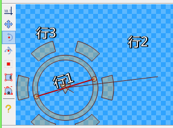
这个工具提供了两种可调节功能。你可以定位旋转中心（原点），相当于使用 \org 标签)，或者你随意点击来确定旋转的角度。
你会注意到圆心和光标有一条连线，当你按住鼠标左键的同时拖动时，可以看到字幕旋转的实际效果。旋转角度合适时松开鼠标。按住Ctrl同时进行旋转会以30°为单位角度增量进行。
如果原点距离字幕中心较远，你会看见字幕下方有一条辅助线，它也会随着角度变化重新定位。
如果已选多行，所有的行都会被加入旋转标签(但是不会像十字工具或者拖动工具那样相对旋转)。
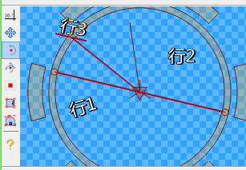
这个模式和上面的模式相似，尽管有很多要点不同。因为这个旋转同时定位两个轴的旋转角，所以看起来是3D的，因此也更难准确使用。
为了使它更容易用，字幕所在平面会显示为一个网状辅助平面。从原点有三条射线，指明XYZ轴正方向。
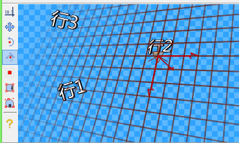
使用这个工具时，你只需要按住鼠标按键，在视频区域移动光标。当你左右方向移动时，字幕会沿着Y轴旋转，上下移动时会沿着X轴旋转。
如果你在旋转的过程中同时按住Shift，则只沿着两轴中的一条旋转，按住Ctrl进行操作时会以30°为单位进行旋转。
如果已选多行，所有的行都会被加入旋转标签(但是不会像十字工具或者拖动工具那样相对旋转)。
和Z轴旋转工具一样，你也可以拖动原点的“锚“。
这是所有工具里用起来最简单的，它允许你按X和Y轴方向缩放字幕的大小。每个轴向都有一个指示条，显示着 100%尺寸和当前尺寸。
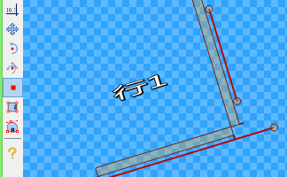
使用这个工具，只需要按住鼠标左键同时拖动，上下拖动会改变Y轴的缩放，左右拖动会改变X轴的缩放。按住Shift的同时操作只会改变单独一个轴的缩放量，取决于哪个方向移动得较大，按住Ctrl操作会把单位缩放量限制在25%。
矩形裁剪工具允许你裁剪字幕的显示范围，字幕处在矩形外的部分不会被显示出来(相当于通过图形使用\clip(x1,y1,x2,y2) 标签)。（译者注：当你使用iclip时，矩形内的部分不会显示）
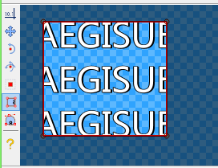
使用这个工具有两种方式。你可以点击拖动矩形四角中的一个，来调节已存在的矩形，也可以点击视频的空白处点击拖动，来创建一个新的矩形，字幕中看不见的区域是暗颜色的。
和上面的工具相似，不过这个工具可以绘制矢量区域，区域外部的字幕不会被渲染。不同点在于，这个工具可以通过贝塞尔曲线的形式拟合各种图形。
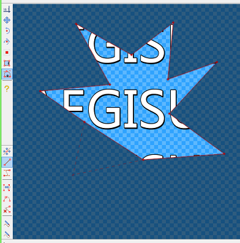
这个模式下含有8个子工具:
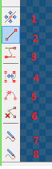
1.拖动，允许你拖动控制点 2.插入线段，允许你插入一条从最后一个点出发，到鼠标位置结束（点击）的一条线段。 3.插入一条贝塞尔曲线段，和上面的相同，但是它会多出两个控制点，用来调节曲线形状。 4.在直线和曲线间转化，在线段或三次曲线上点击使它们之间相互转化。 5.分割曲线，在线段或三次曲线上点击，使它们在点击处分为两段 6.移除控制点，点击删除控制点 7.徒手绘制图形（直线），在视频上点击并用鼠标拖动，绘制手绘图形，该图形会自动闭合，由初始点连接到终点，由直线段围成。 8.徒手绘制图形（平滑曲线）和7的功能相似，不过图形由曲线段围成。
和拖动工具一样，利用Ctrl也可以进行多点选择。默认情况下所有控制点都是选中状态；想要整体去除选中，可以在拖动模式下点击空白处。多控制点可以一次性被选中，你需要在移动模式下点击拖动鼠标，进行框选。